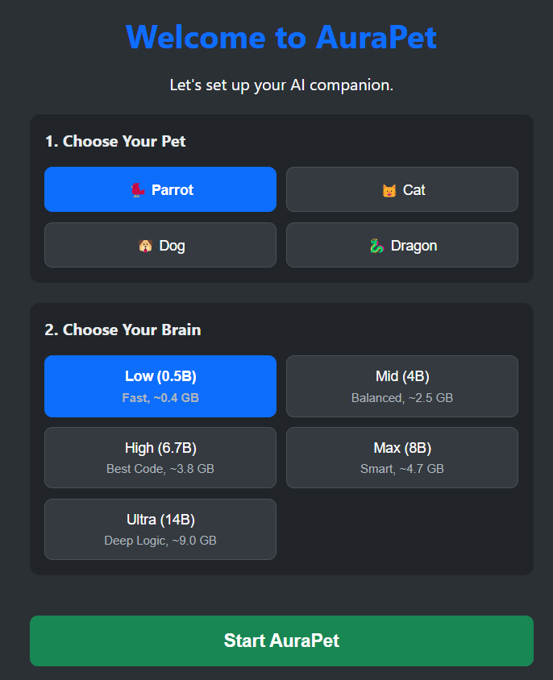
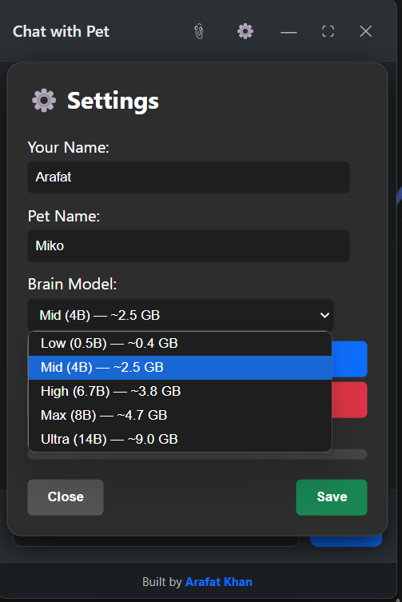
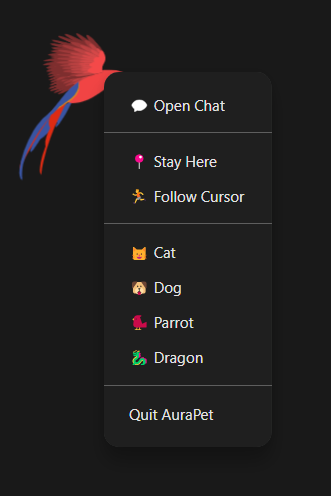
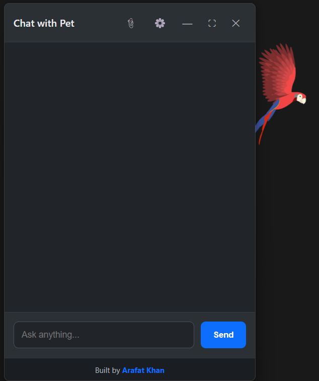

On first launch, pick your pet and choose your AI brain. AuraPet automatically downloads the Ollama engine for you.

Choose from 5 local AI models. The app handles the download and connects everything seamlessly.

Right-click the pet to change its animal, make it stay, or follow your cursor around the screen.

Open the chat window and ask anything. Your AI runs 100% locally. No data ever leaves your PC.
Bigger models are smarter, but require more RAM and storage.
| Option | Size | RAM | Best For |
|---|---|---|---|
| Low (0.5B) | ~0.4 GB | ~1 GB | Old PCs, quick chats |
| Mid (4B) ⭐ | ~2.5 GB | ~4 GB | Recommended. Balanced. |
| High (6.7B) | ~3.8 GB | ~6 GB | Writing and coding |
| Max (8B) | ~4.7 GB | ~8 GB | Smart assistant |
| Ultra (14B) | ~9.0 GB | ~16 GB | Deep reasoning |
Every model can chat, answer questions, and write code. The bigger models (Max & Ultra) will write much better, more complex code.
You can ask AuraPet to "Open my Downloads folder" or "Delete this file". Only the High (6.7B) or larger models are smart enough to understand the context to do this reliably.
Currently, attaching an image just sends its name to the AI. True image recognition requires a Vision model (like LLaVA), which will be added in a future update.
Reading local PDFs or large documents requires a Vector Database. This is planned for a major v2.0 update to allow the Ultra model to act as a local agent.